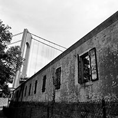
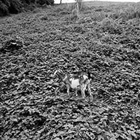
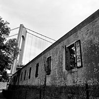
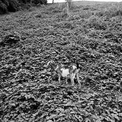

I yearn for the sensation that is coupled with adventure, experience and the conundrum of change. There is an unknown phenomenon discovered as one moves onward through a journey. Whether that journey is physical or mental, there is a constant feeling of advancement and metamorphosis. Throughout my photographic career, I have danced along the line of termination and metempsychosis in order to create a paradox for viewers. My photographs are pervaded with macabre tension, delicate mystery and the enigma of reality. There is a sense of disquiet; as if something is about to happen or perhaps something already has; this conclusion is typically left up to the viewer.
 


